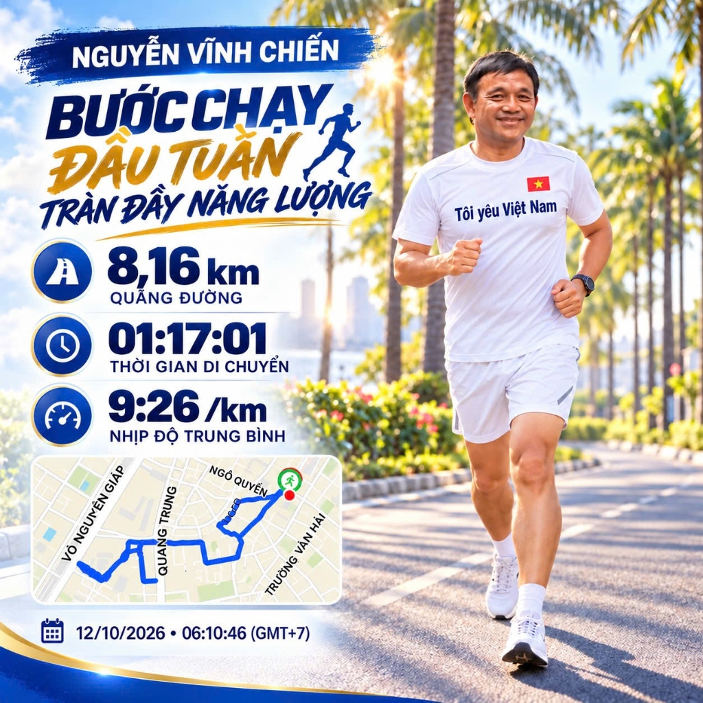

Tuổi Tác Là Con Số,
Bước Chạy Là Đam Mê
Chào mừng bạn đến với góc nhỏ của Nguyễn Vĩnh Chiến. Ở tuổi ngoài 60, tôi bắt đầu mỗi ngày lúc 5:30 sáng bằng đôi giày chạy bộ, nụ cười rạng rỡ và một trái tim luôn tràn đầy sự tử tế, biết ơn cuộc sống.

“Người tử tế tìm thấy niềm vui trong từng việc nhỏ. Người yêu thương nhận ra hạnh phúc trong từng bước chân chạy sớm mai.”
Chạy Bộ Để Sống Trọn Vẹn & Lan Tỏa Năng Lượng Tích Cực
Rất nhiều người ở độ tuổi ngoài 60 bắt đầu lo sợ sự lão hóa, chọn lối sống tĩnh tại và thu mình lại. Nhưng với tôi, Nguyễn Vĩnh Chiến, cơ thể này chỉ già đi khi chúng ta ngừng vận động và thôi ước mơ.
Mỗi buổi sáng lúc 5:30, khi phố phường còn đang say ngủ, tôi xỏ đôi giày chạy thân quen, khoác lên mình chiếc áo cờ đỏ sao vàng hoặc áo xanh hy vọng mang dòng chữ 'Tôi yêu Việt Nam!'. Từng sải chân trên đại lộ Võ Nguyên Giáp, hít thở từng luồng gió biển mặn mòi, tôi thấy mình được tái sinh.
Tôi không chạy để đua tranh huy chương hay so kè tốc độ cùng ai. Tôi chạy để chiến thắng sức ỳ của bản thân, giữ một cơ thể dẻo dai khỏe mạnh để chăm lo cho gia đình, và lan tỏa tinh thần sống tích cực, tử tế đến tất cả những ai tôi có cơ duyên gặp gỡ.
Nhật Ký Chạy Bộ & Cung Đường GPS
Từng cung đường, từng con số nhịp bước, lượng calo và cảm xúc được ghi lại chân thực từ thiết bị Garmin / Strava trong các buổi chạy sáng sớm của Anh Chiến.
Bài Viết & Bí Quyết Sống Khỏe
Những đúc kết chân thành về phương pháp chạy Zone 2, cách phòng tránh chấn thương cho người trung niên, và triết lý sống tử tế mỗi ngày.
Bắt Đầu Bước Chạy Của Bạn Hôm Nay
Nhập cân nặng và mục tiêu cự ly để tính toán lượng calo tiêu hao và nhận lời khuyên truyền cảm hứng từ Anh Nguyễn Vĩnh Chiến.
Thư Viện Khoảnh Khắc Đẹp
Những hình ảnh rạng ngời dưới ánh bình minh, màu cờ đỏ thắm và nụ cười ấm áp của người đàn ông U60+ trên từng chặng đường.
Bức Tường Yêu Thương & Lời Chúc
Nơi bạn bè, đồng đội, học trò và những người yêu quý gửi lời chúc sức khỏe, động viên và chia sẻ câu chuyện cùng Anh Nguyễn Vĩnh Chiến.
Gửi Lời Chúc Đến Anh Chiến
Mỗi lời nhắn của bạn là một nguồn động viên to lớn để Anh Chiến tiếp tục xỏ giày mỗi sớm mai!
Những Câu Hỏi Thường Gặp Về Chạy Bộ Tuổi 60+
Kinh nghiệm thực chiến giúp bạn bắt đầu an toàn, khoa học và bền bỉ suốt nhiều năm tháng.